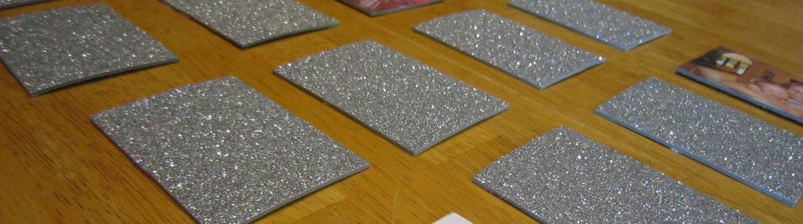

<div class="card main-card">
    
    <div class="card-body">
      <h5 class="card-title">משחק הזיכרון</h5>
      <p class="card-text">
       
        ברוכים הבאים למשחק הזיכרון!
        <br>
        בואו לאמן את המוח ולשפר את החשיבה והזיכרון שלכם עם משחק זכרון מאתגר. משחק זיכרון לילדים וגם למבוגרים. 
        <br>
        משחק הזיכרון (מוכר גם בשם זוגות) הוא משחק חשיבה לילדים שמטרתו להתאים זוגות קלפים תוך שימוש בזיכרון.

במשחק זה המשתתפים פורסים חבילת קלפים, המורכבת מזוגות זהים של קלפים, כאשר התמונה כלפי מטה. השחקן מרים שני קלפים במטרה למצוא שני קלפים זהים. אם שני הקלפים זהים, השחקן יקח את הקלפים אליו והם ייצברו לזכותו, אחרת יחזיר את הקלפים למקומם כאשר פניהם כלפי מטה. בתחילת המשחק, סביר כי יתקשו המשתתפים למצוא שני קלפים זהים, אך ככל שמספר הניסיונות עולה, כך המשתתפים זוכרים את צורת הקלף ומיקומו.
      </p>
    </div>
  </div>